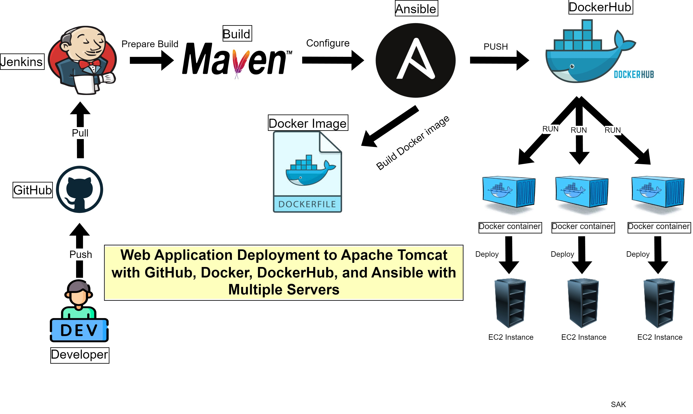

Architecture
Project Overview
This project involves deploying a multi-server web application using Docker and Ansible across multiple instances.
The setup uses Linux as the operating system and GitHub for version control. Docker is utilized for containerization, while DockerHub serves as the registry for container images. Ansible facilitates automated provisioning and configuration management across multiple servers, ensuring efficient deployment on Apache Tomcat instances.
Technology Stack
AWS
Linux
Git & GitHub
Docker
DockerHub
Apache Tomcat
Ansible